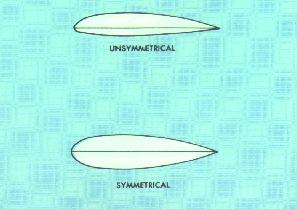
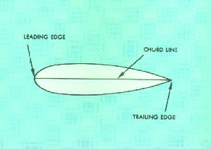
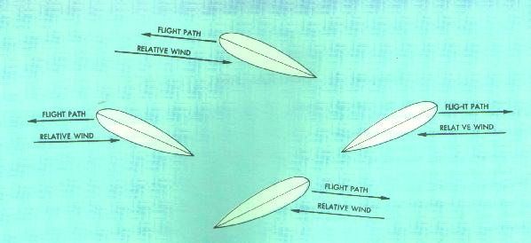
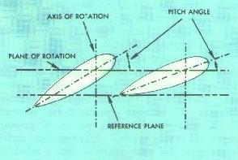
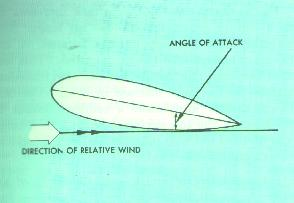
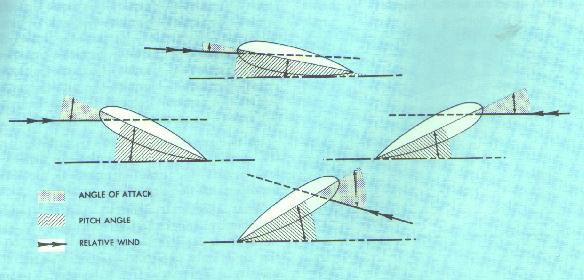
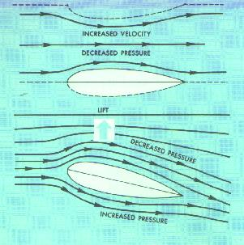
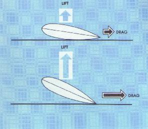

Unless otherwise indicated, this handbook is based on a helicopter that has the following characteristics:
1-An unsupercharged reciprocating engine.
2-A single main rotor rotating in counterclockwise direction
(looking downward on the rotor).
3-An antitorque (tail) rotor.
4-Skid-type landing gear.
Information is intended to be general in nature and should apply to most helicopters having these characteristics.
Before launching into a detailed discussion of the various forces acting on a helicopter in flight, it is first necessary that you understand the meaning of a few basic aerodynamic terms, how the force of lift is created, and the effect that certain factors have on lift.
Airfoil.- An airfoil is any surface designed to produce lift or thrust when air passes over it. Propellers and wings of airplanes are airfoils. Rotor blades on helicopters are airfoils. The wing of an airplane is normally an unsymmetrical airfoil, that is, the top surface has more curvature than the lower surface.

Figure 1.- Symmetrical and unsymmetrical airfoils.
The main rotor blades of most helicopters are
symmetrical airfoils; that is, having the same curvature on both upper and
lower surfaces (fig. 1). Much research,
however, is being conducted in the use of unsymmetrical airfoils for main
rotor blades, and at least one currently manufactured make of helicopter is
equipped with main rotor blades that are not considered true symmetrical
airfoils.
On an unsymmetrical airfoil, the center of
pressure is variable--as the angle of attack increases, the center
of pressure moves forward along the airfoil surface; as the angle
of attack decreases, the center of pressure moves rearward. On a
symmetrical airfoil, center of pressure movement is very limited.
A symmetrical airfoil is preferred for rotor blades so that a
relatively stable center of pressure is maintained. Improvements
in control systems may allow more latitude in blade designs in
the future.

Figure 2.- Chord line of an airfoil is the imaginary
line
joining the leading and trailing edges of the airfoil.
Chord line.- The chord line of an airfoil is an imaginary straight line from the leading edge to the trailing edge of the airfoil (fig. 2).

Figure 3.- Relationship between the flight path of an
airfoil and relative wind. Relative wind is parallel and
in the opposite direction to flight path.
Relative Wind.-
Relative wind is the direction of the
airflow with respect to an airfoil. If an airfoil moves forward
horizontally, the relative wind moves backward horizontally
(fig. 3). If an airfoil moves backward
horizontally, the relative wind moves forward horizontally. If an airfoil
moves forward and upward, the relative wind moves backward and downward. If
an airfoil moves backward and downward, the relative wind moves
forward and upward. Thus the flight path and relative wind are
parallel but travel in opposite directions. (Forward and backward
as used here are relative to fore and aft axis of the
helicopter--forward meaning in the direction the nose of the
helicopter points, and backward meaning the direction the tail points.)
Relative wind may be affected by several factors
including the rotation of the rotor blades, horizontal movement
of the helicopter, flapping of the rotor blades, and wind speed
and direction.
Relative wind is created by the motion of an airfoil
through the air, by the motion of air past an airfoil, or by a
combination of the two. For a helicopter, the relative wind is the
flow of air with respect to the rotor blades. When the rotor is
stopped, wind blowing over the blades creates a relative wind; when
the helicopter is hovering in a no-wind condition, relative wind is
created by the motion of the rotor blades through the air; when the
the helicopter is hovering in a wind, the relative wind is a
combination of the wind and the motion of the rotor blades through
the air; and when the helicopter is in horizontal flight, the
relative wind is a combination of the rotation of the rotor blades
and the movement of the helicopter.

Figure 4.- The pitch angle of a rotor blade is the angle
between the chord line and a reference plane determined
by the rotor hub or the plane of rotation.
Pitch angle.- The rotor blade pitch angle is the acute angle between the blade chord line and a reference plane determined by the main rotor hub. Since the rotor plane of rotation is parallel to the plane containing the main rotor hub, the rotor blade pitch angle could also be described as the acute angle between the blade chord line and the rotor plane of rotation ( fig. 4 ). The pitch angle can be varied by the pilot through the use of cockpit controls (collective and cyclic pitch controls) provided for this purpose.

Figure 5. - Angle of attack is the angle between
the relative
wind line and the chord line.
Angle of attack.- The angle of attack is the angle between the chord line of the airfoil and the direction of the relative wind (fig. 5). The angle of attack should not be confused with the pitch angle of the rotor blades. The pitch angle is determined by the position of the appropriate cockpit controls (collective and cyclic pitch), whereas the angle of attack is determined by the direction of the relative wind. The angle of attack may be less than, equal to, or greater than the pitch angle as shown in figure 6. The pilot can increase or decrease the angle of attack by changing the pitch angle of the rotor blades. If the pitch angle is increased, the angle of attack is increased; if the pitch angle is decreased, the angle of attack is decreased. Since the angle of attack is dependent on relative wind, the same factors that affect the relative wind also affect the angle of attack.

Figure 6. - The relationship between the angle of
attack and pitch angle for various positions of the rotor
blade
in the plane of rotation during forward flight. Angle of attack is
less than pitch angle 90°
to the pilot's right (top);
greater than pitch angle 90° to the pilot's left (bottom);
and equal to
pitch angle in the fore (left) and aft (right)
positions.
Lift.- The force, lift, is derived from an airfoil through a principle often referred to as Bernoulli's Principle or the "venturi effect." As air velocity increases through the constricted portion of a venturi tube, the pressure decreases. Compare the upper surface of an airfoil with the constriction in the venturi tube (fig. 7). They are very similar. The upper half of the venturi tube is replaced by layers of undisturbed air. Thus, as air flows over the upper surface of an airfoil, the curvature of the airfoil causes an increase in the speed of the airflow. The increased speed of airflow results in a decrease in pressure on the upper surface of the airfoil. At the same time, airflow strikes the lower surface of the airfoil at an angle, building up pressure. The combination of decreased pressure on the upper surface and the increased pressure on the lower surface results in an upward force. This is the force, lift.

Figure 7. - (Top) Bernoulli's Principle: Increased air
velocity
produces decreased pressure; (Bottom) Lift is produced by
an airfoil through a combination of decreased pressure above
the airfoil (as per Bernoulli's Principle.), and increased
pressure beneath.
Drag (airfoil).- At the same time the airfoil is producing lift, it also is subject to a drag force. Drag is the term used for the force that tends to resist movement of the airfoil through the air--the retarding force of inertia and wind resistance. Drag acts parallel and in the opposite direction to the movement of the airfoil or, if you prefer, in the same direction as the relative wind. This force, drag, causes a reduction in rotor RPM (revolutions per minute) when the angle of attack is increased. An increase in angle of attack then not only produces an increase in lift, but it also produces an increase in drag (fig. 8).

Figure 8. - Relationship between angle of attack and lift
and drag forces. As the angle of attack increases, lift
and drag increases.
Stall.- When the angle of attack increases up to a certain point, the air can no longer flow smoothly over the top surface because of the excessive change of direction required. This loss of streamlined flow results in a swirling, turbulent airflow, and a large increase in drag. The turbulent airflow also causes a sudden increase in pressure on the top surface resulting in a large loss of lift. At this point, the airfoil is said to be in a stalled condition.
Lift and angle of attack.- As the angle of attack of an airfoil increases, the lift increases (up to the stall angle) providing the velocity of the airflow (relative wind) remains the same (fig. 8). Since the pilot can increase or decrease the angle of attack by increasing or decreasing the pitch angle of the rotor blades through the use of the collective pitch cockpit control, lift produced by the rotor blades can be increased or decreased. The pilot must remember, however, that any increase in angle of attack will also increase drag on the rotor blades, tending to slow down the rotor rotation. Additional power will be required to prevent this slowing down of the rotor.
Lift and velocity of airflow.- As the velocity of the airflow (relative wind) increases, the lift increases for any given angle of attack. Since the pilot can increase or decrease the rotor RPM which, in turn, increases or decreases the velocity of the airflow, the amount of lift can be changed. As a general rule, however, the pilot attempts to maintain a constant rotor RPM and changes the lift force by varying the angle of attack.
Lift and air density.-
Lift varies directly with the density of the air--as the air density
increases, lift and drag increase; as air density decreases, lift and drag
decreases.
What affects air density? Altitude and atmospheric
changes affect air density. The higher the altitude the less dense
the air. At 10,000 feet the air is only two-thirds as dense as the
air at sea level. Therefore, if a helicopter is to maintain its lift,
the angle of attack of the rotor blades must be increased. To increase
the angle of attack, the pilot must increase the pitch angle of the
blades. We have already seen that, as the pitch angle increases, drag
on the rotor system increases and rotor RPM tends to decrease.
Therefore, more power must be applied to prevent a decrease in rotor
RPM. This is why a helicopter requires more power to hover at higher
altitudes than under the same conditions at lower altitudes.
(See fig. 52 and the accompanying
discussion.)
Due to the atmospheric changes in temperature,
pressure, or humidity, the density of the air may be different,
even at the same altitude, from one day to the next or from one
location in the country to another. Because air expands when heated,
hot air is less dense than cold air. For the helicopter to
produce the same amount of lift on a hot day as on a cold day, the
rotor blades must be operated at a higher angle of attack. This
requires that the blades be operated at a greater pitch angle which
increases rotor drag and tends to reduce rotor RPM. Therefore, to
maintain a constant rotor RPM, more throttle is required. For this
reason, a helicopter requires more power to hover on a hot day than
on a cold day. (See fig. 53 and
the accompanying discussion.)
Since air expands as pressure decreased, there
will be fluctuations in the air density due to changes in atmospheric
pressure. The lower the pressure, the less dense the air and,
for the same reason stated previously, the greater the power required
to hover.
Because water vapor weighs less than an equal amount of dry air,
moist air (high relative humidity) is less dense than dry air
(low relative humidity). Because of this,
a helicopter will require more power to hover on a humid day than on
a dry day (see fig. 54 and the
accompanying discussion). This is especially true on hot, humid days
because the hotter the day, the greater the amount of water vapor
the air can hold. The more moisture (water vapor) in the air, the
less dense the air.
From the above discussion, it is obvious that
a pilot should beware of high, hot, and humid conditions-high
altitudes, hot temperatures, and high moisture content (see
fig. 55 and the accompanying
discussion). A pilot should be especially aware of these conditions at the
destination, since sufficient power may not be available to complete a
landing safely, particularly when the helicopter is operating at high gross
weights (see fig. 64 and the
accompanying discussion).
Lift and weight.- The total weight (gross weight) of a helicopter is the first force that must be overcome before flight is possible. Lift, the force which overcomes or balances the force of weight, is obtained from the rotation of the main rotor blades.
Thrust and drag.-
Thrust moves the aircraft in the desired
direction; drag, the retarding force of inertia and wind resistance,
tends to hold it back. In vertical flight, drag acts downward; in
horizontal flight, drag acts horizontally and opposite in direction
to the thrust component. Thrust, like lift, is obtained from the main
rotor. Drag, as discussed here, is the drag of the entire
helicopter--not just the drag of the rotor blades which was discussed
earlier. The use of the term "drag" in subsequent portions of
this handbook should be considered as having this same connotation. In
future references to the drag of the rotor blades, the statement "drag
of the rotor blades or rotor system" will be used.
{kind=link}
{kind=link}
{kind=link}
{kind=link}
{kind=link}
{kind=link}
{kind=link}
{kind=link}